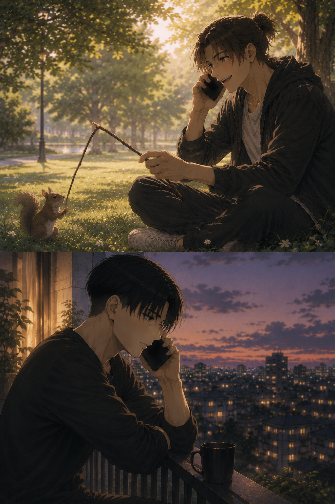

The Sound of Home
Levi — POV

5:06
Incoming call.
07:58
Call ended.
Levi stared at the screen for a long moment after the line had gone quiet.
Two hours.
Fifty-two minutes.
He frowned. That couldn't be right.
He could have sworn it had lasted ten minutes at most. Maybe fifteen.
He replayed the conversation in his head, searching for the missing time, trying to understand where nearly three hours had disappeared.
They hadn't planned to talk over the phone.
Not really.
Eren had mentioned he was heading to the park.
Levi had looked at the message for all of three seconds before calling him without thinking.
He'd missed his voice.
Eren had started with a story from his childhood. Somehow that had drifted into something that had happened at work.
Levi had quietly rolled his eyes as Eren described yet another coworker relying on him to solve a problem that wasn't his to fix. Eren didn't seem to mind. Levi did.
Then there had been an unusually fearless squirrel that had apparently decided Eren looked trustworthy enough to approach in the park. A few minutes later, the squirrel had already been forgotten because, according to Eren, a flock of pigeons had developed an entirely personal vendetta against him while he sat on the ground, absentmindedly poking at the grass with a stick.
Which had somehow reminded him of a news story from Brazil involving an elderly prostitute from an old TV show.
Levi still had absolutely no idea how one topic had led to the other.
And somehow...
Three hours.
Levi let out the smallest breath, somewhere between amusement and surrender.
He wasn't even surprised anymore.
That was the thing about Eren's voice.
It wasn't simply pleasant.
It was...
Home.
Levi had never understood how something as simple as a voice could change the way his entire body felt.
The first few words were always enough.
His shoulders loosened.
His breathing slowed.
The tension he carried without noticing quietly slipped away, piece by piece.
It wasn't a decision.
It simply...
was him.
There was something terrifying about how easily Eren could undo him.
It felt like exhaling after holding his breath for hours without ever realizing he'd been doing it.
As though his body recognized home before his mind did.
There was something impossibly gentle about it. A warmth that couldn't be reproduced through words alone. Written messages carried Eren's thoughts; his voice carried Eren himself.
Every laugh escaped before he could stop it. Every sentence stumbled over the next whenever excitement got the better of him. Sometimes he spoke so quickly his words collided together, forcing him to start over while laughing at himself. Sometimes he'd pause in the middle of a story because another thought had interrupted the first one.
Levi had learned those pauses.
He knew exactly when Eren was smiling before the smile reached his voice.
He knew the tiny inhale before he admitted something embarrassing.
The longer exhale whenever he was pretending not to be disappointed.
Even silence sounded different depending on what he was feeling.
Most people listened to words.
Levi listened to breathing.
To the rhythm between syllables.
To every microscopic hesitation that no message could ever contain.
He loved reading Eren.
But hearing him...
That was something else entirely.
There was no guessing. No wondering if a sentence had been playful or serious. No trying to imagine the expression behind the punctuation.
Eren's voice erased every uncertainty.
It reached him whole.
Human.
Real.
Levi finally placed the phone face down on the kitchen counter.
The apartment immediately felt larger.
Quieter. Almost wrong.
It always happened after they hung up.
No matter how often they texted afterwards, no matter how constant their conversations remained throughout the day, the first few minutes after a call always felt strangely empty. As if the air itself needed time to remember that Eren wasn't actually standing somewhere nearby.
He shook his head. Ridiculous.
There were dishes waiting. Laundry to fold. Reports he'd promised himself he'd finish before bed.
Instead, he walked toward the bathroom almost without thinking.
The water was already hot by the time he stepped beneath it.
Heat spread across his shoulders, loosening muscles he hadn't realized were tense.
He closed his eyes.
Immediately...
There he was.
Not as pixels on a screen.
Not as a voice through cheap speakers.
Just...
There.
Levi imagined standing beside him in the kitchen.
Nothing extraordinary.
Eren talking about something completely unrelated while searching every cupboard except the one that actually contained what he needed. Levi rolling his eyes before silently reaching over him to grab it.
"See? That's why I need you, annoying."
The inevitable, exaggerated words echoed so clearly in Levi's mind that he could almost hear the grin behind them.
He smiled.
A real one.
The kind that existed just for Eren.
His mind wandered further.
A hand brushing against his. Not accidentally. Naturally. The rough warmth of Eren's palm fitting against his own as though it had always belonged there. His thumb absentmindedly tracing the back of Levi's hand while they waited for water to boil. The weight of a shoulder leaning against his. The sound of Eren humming something completely off-key because he'd forgotten Levi was listening.
God.
He wanted that.
Not grand gestures. Not extraordinary adventures.
Just...
A Tuesday.
A life ordinary enough that Eren's hand in his would become something they no longer noticed, but still both love.
The ache settled quietly beneath his ribs.
Distance had a strange cruelty. It allowed him to know someone so completely while denying him the simplest things.
Touching his face.
Resting his forehead against his shoulder.
Running his fingers through his hair after a long day.
Listening to his voice without speakers separating them.
The thought should have hurt more than it did.
Instead...
It filled him with certainty.
Because none of those things felt impossible.
Only delayed.
There had never been another future in Levi's mind once Eren had stepped into it.
Not one he'd ever considered.
There wasn't another person he wanted to wake up beside.
Another laugh he wanted echoing through an apartment.
Another voice capable of making nearly three hours disappear without either of them noticing.
Levi opened his eyes.
Steam covered the mirror.
They'd spent nearly three hours talking.
Somewhere along the way, they'd watched the Club World Cup final together.
Neither of them had noticed how late it had become until Eren suddenly realized he needed to leave if he wanted to get home before it started. Eren hated to miss the first few minutes, after all.
Levi had delayed it, of course.
Just a few more seconds. One more story. One more thought. One more excuse to keep listening to Eren's voice just a little longer.
Eventually, he'd sighed softly.
"Je t'aime."
The smile reached Eren's voice before the words did.
"Te amo também."
Then came the familiar reminder.
"Let me know when you're home."
A promise. One last goodbye. Only then had Levi finally let the call end.
Which was why he was standing beneath the shower now instead of nearly an hour earlier.
He smiled to himself.
Three hours.
The hot water had barely started rinsing the shampoo from his hair when his phone vibrated somewhere on the bathroom counter.
Levi smiled.
Of course.
He stepped out just enough to reach for it, leaving wet footprints across the floor.
A new message.
Hurry up.
You need to hear this.
Someone's murdering the anthem. 😭
Levi stared at the screen.
Then, despite himself...
He laughed.
Home was already calling him back.